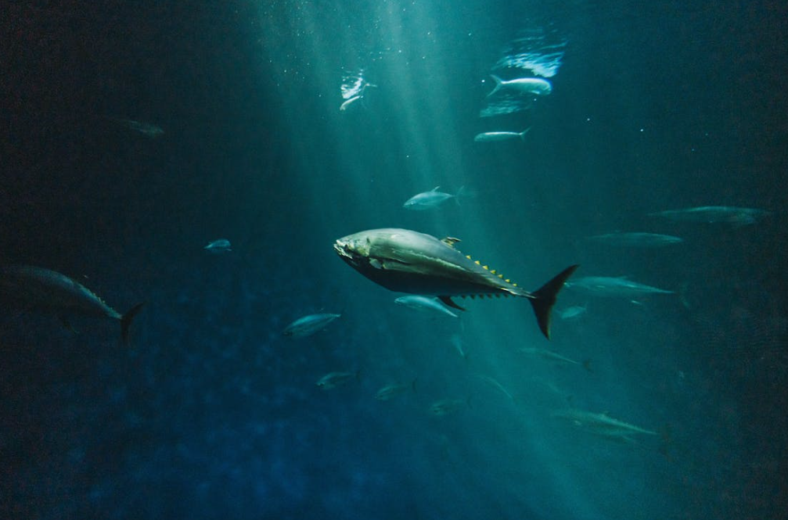
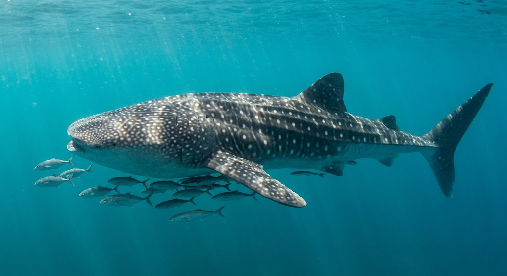
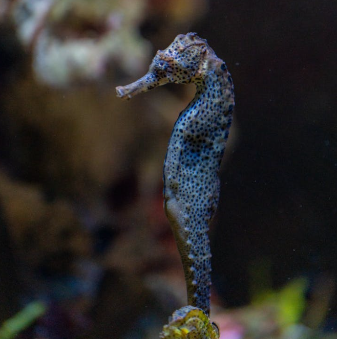
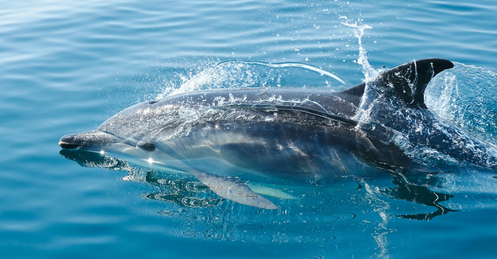
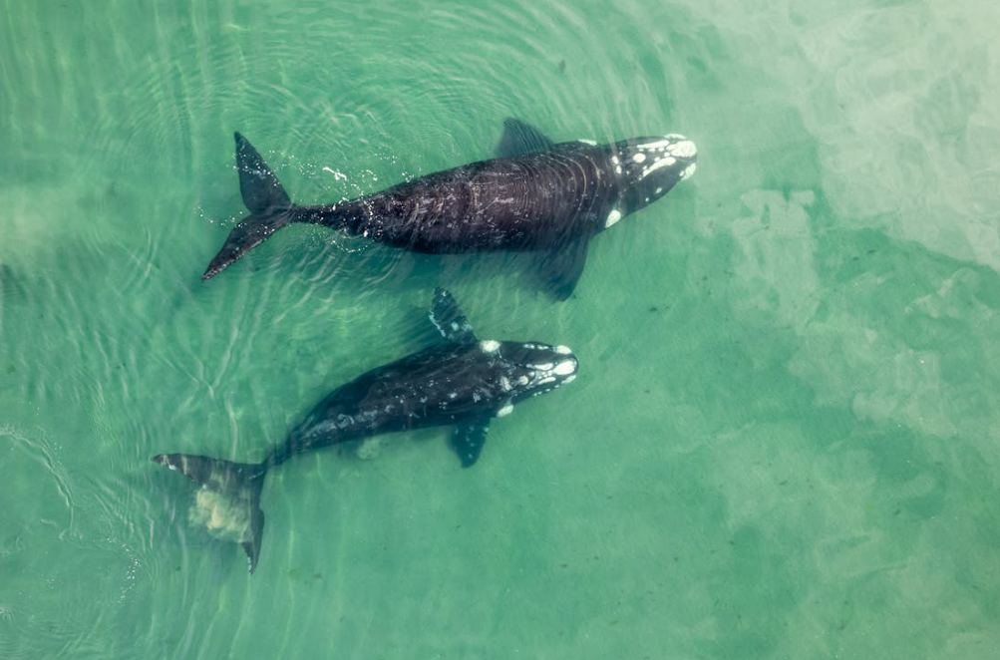
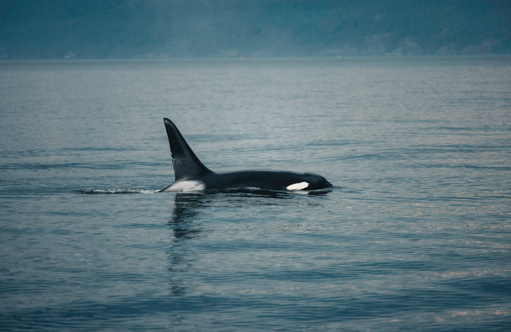
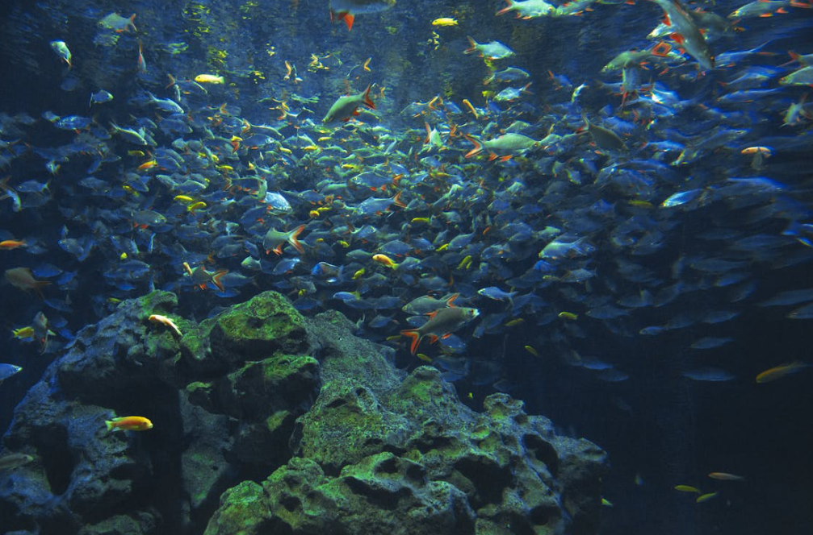

PHOTO
STUDIO
İletişim
Okyanusların gizemli dünyasını, profesyonel ekipmanlar ve sanatsal bakış açısıyla kadrajımıza alıyoruz.
Galeriye Göz At +
Ben Gökdeniz Uzun. Yaklaşık 5 yıldır profesyonel olarak sualtı dalışları gerçekleştiriyor ve deniz canlılarının büyüleyici yaşamlarını fotoğraflıyorum.
Amacım, insan gözünün nadiren şahit olduğu o masmavi derinliklerdeki doğal yaşamı ve renkleri en saf haliyle yüzeye çıkarmak.

Dalış Sayısı
Şehir/Ülke
Sergi
Yıl Deneyim
Deniz canlıları, mercan resifleri ve sualtı habitatlarının profesyonel fotoğrafçılığı.
Deniz kıyıları, vahşi doğa ve açık alanlarda sanatsal manzara çekimleri.
Belgeseller, dergiler ve dijital medya platformları için yüksek çözünürlüklü arşiv.
Yeni başlayanlar için temel sualtı fotoğrafçılığı ve ekipman eğitimleri.







